Diseños Uñas Inspo
쮹uscas ideas lindas y diferentes para tus uñas? 游눈 Esta sección es como un moodboard de los estilos más
aesthetic, delicados, atrevidos y soñadores. Ya sea que quieras algo sencillo para el día a día o
un diseño más elaborado para una ocasión especial, aquí vas a encontrar un montón de ideas para todos los
gustos.
Explora las categorías que hemos preparado, desde uñas de primavera llenas de color 🌸 hasta estilos
minimalistas, brillantes o con detalles súper originales. ¡Te van a dar ganas de ir corriendo a hacerte la
manicura! 😍

 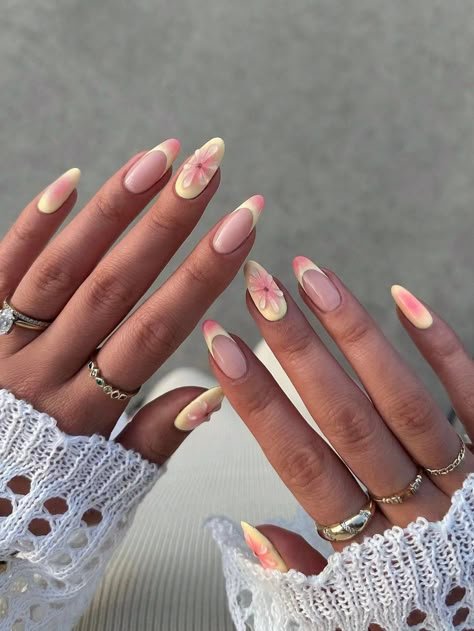
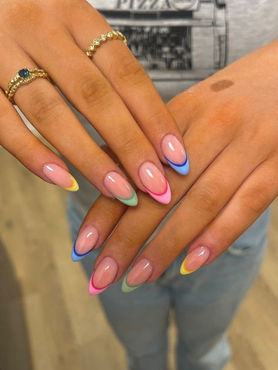
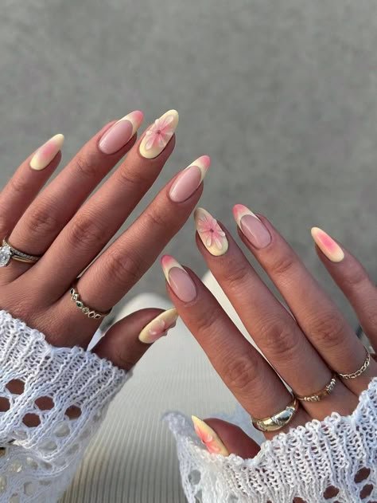
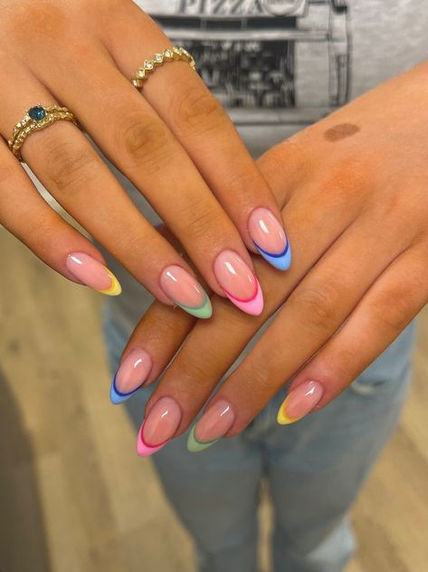
 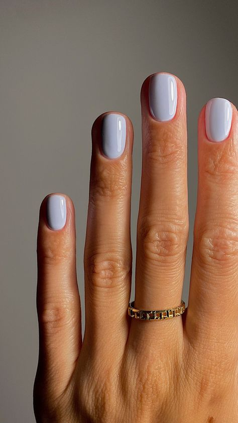
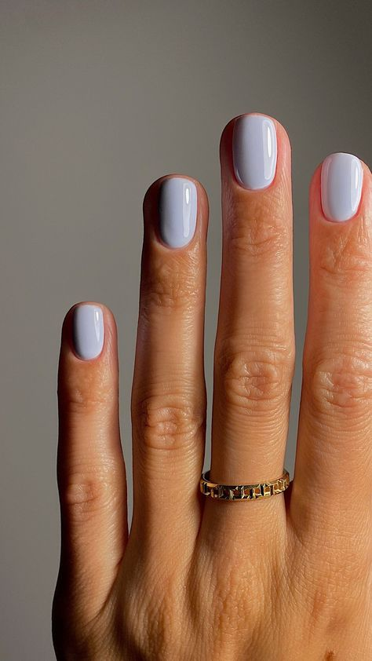
 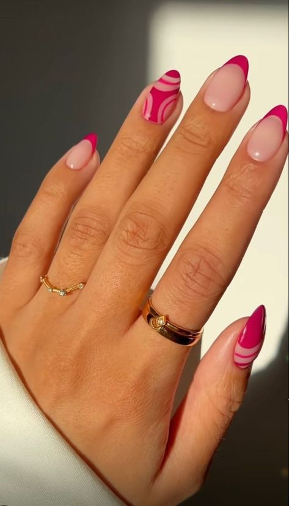
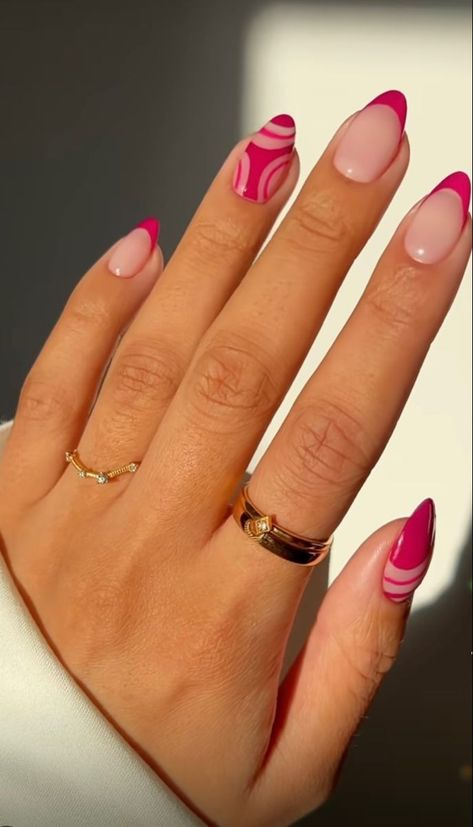

 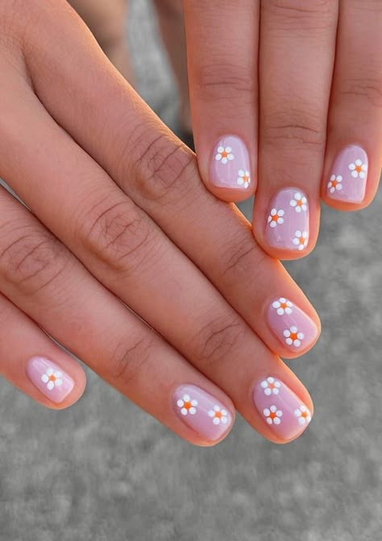
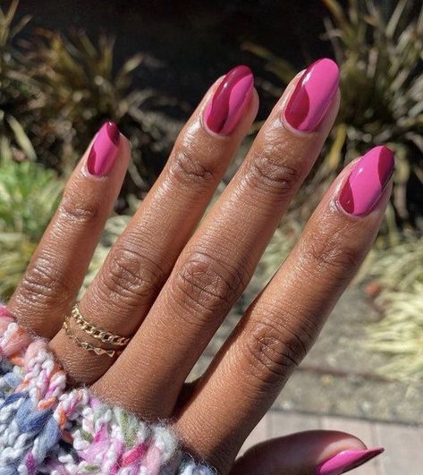
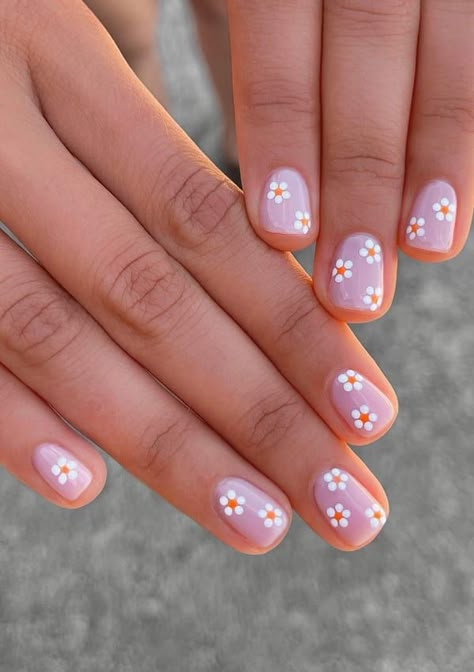
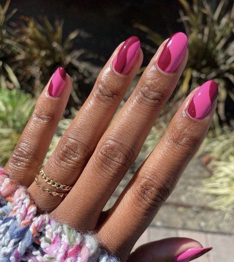